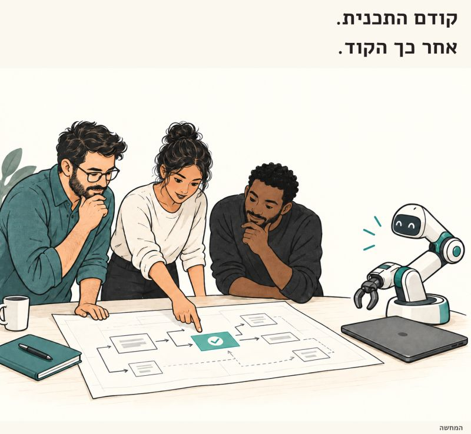

מי כותב את ה-PR הבא שלכם זאת כבר לא השאלה הכי מעניינת.
פורסם במקור ב LinkedIn
מי כותב את ה-PR הבא שלכם זאת כבר לא השאלה הכי מעניינת.
מי יודע להסביר למה הוא צריך להיכנס למערכת? זאת שאלה הרבה יותר טובה.
בצוות שלי כבר בנינו אוטומציות לפתיחת PR, ל-self review, לתיקון קונפליקטים ולעבודה על הערות review. חלקים שבעבר דרשו מאיתנו לשבת מול המחשב ולדחוף ידנית, הסוכן כבר יודע לעשות.
זה משאיר אותי כראש צוות עם שאלה אחרת: מה אני מצפה מהמפתח שמביא לי את השינוי?
שהוא ידע להסביר מה הבעיה, למה בחר בפתרון הזה, מה עוד מושפע ממנו ואיך נדע שהוא באמת עובד. גם אם הוא לא הקליד את רוב הקוד בעצמו.
אצלנו זה התבטא בין היתר ב-PR description. רציתי להבין מה אני הולך לראות לפני שאני קופץ ל-diff: ההחלטות, השינויים והסיכונים. לפעמים כבר שם אפשר לעצור ולהעיר על החלטה, עוד לפני שקוראים שורת קוד.
אבל אפשר לתפוס חלק מהדברים האלה עוד קודם: לשתף את התכנית עם הצוות לפני שנותנים לאייג'נט פקודה לפתח. להסביר מה רוצים לשנות ואיך, ולתת מקום לשאלות ולהערות לפני שכבר יש קוד שצריך לבדוק.
ככה החלטה בעייתית יכולה להיתפס בשלב הדיון, ולא אחרי שהסוכן כבר מימש אותה ושרפנו טוקנים כדי להגיע לשם ואז לתקן.
אין לי בעיה שסוכן כתב את הקוד. יש לי בעיה כשהתשובה לשאלה למה זה בנוי ככה היא "כי ככה הוא כתב".
